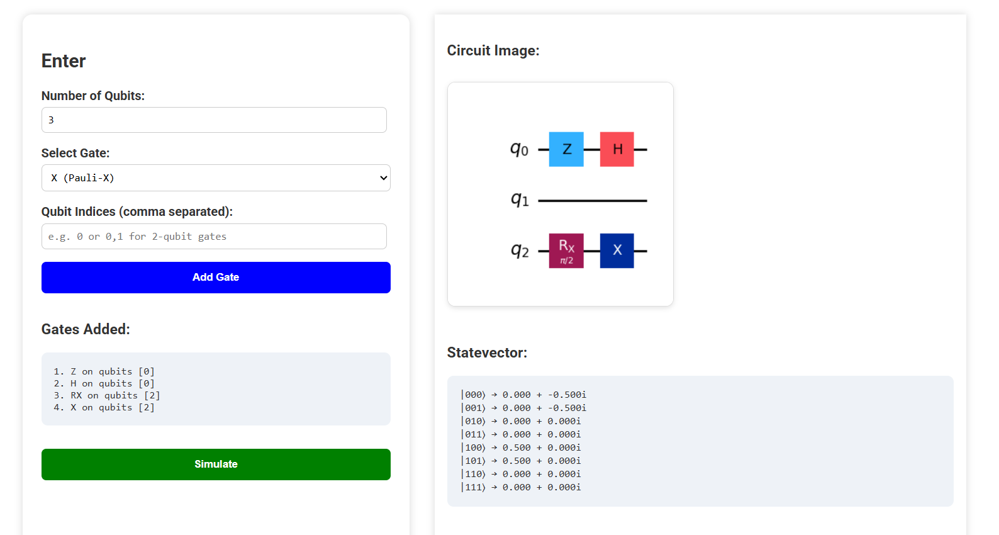
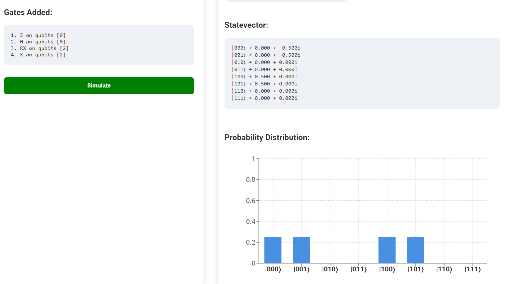

VizQ
| Type | Quantum Simulator |
| Status | Active Development |
| Frontend | React / Vite |
| Backend | Python / Flask |
| Simulation | Qiskit |
| Deployment | vizq.onrender.com |
| Repository | GitHub |
Overview
VizQ is a quantum circuit simulator that allows users to build, simulate, and visualize quantum circuits interactively through a web interface.
The system combines a React-based frontend with a Python backend powered by Qiskit, allowing users to construct circuits using quantum gates and inspect the resulting quantum states visually.
Instead of treating circuits as static code definitions, VizQ focuses on interactive experimentation through direct manipulation and live simulation output.
Simulation Pipeline
Users define a quantum circuit through the frontend interface by selecting qubits and applying gates such as H, X, Y, Z, RX, RZ, and CX.
Circuit instructions are sent to the backend through the
/simulate endpoint where Qiskit constructs and simulates
the quantum circuit using AerSimulator.
The backend returns:
- Circuit diagram image
- Statevector amplitudes
- Probability distributions
- Bloch vector information
React Frontend
↓
Flask API (/simulate)
↓
Qiskit Circuit Builder
↓
AerSimulator
↓
Simulation Results
Features
- Add quantum gates dynamically
- Interactive circuit simulation
- Statevector visualization
- Probability distribution charts
- Qiskit-generated circuit diagrams
- Bloch vector support for single qubits
Interface
The interface is structured around direct circuit construction and visualization workflows.
| Component | Purpose |
|---|---|
| Qubit Selector | Defines active qubit count |
| Gate Selection | Adds quantum operations |
| Circuit Renderer | Displays generated circuit diagrams |
| Probability Charts | Visualizes output distributions |
| Statevector Panel | Displays quantum amplitudes |
Implementation
VizQ uses a full-stack architecture where the frontend handles interaction and visualization while the backend performs circuit construction and simulation.
- React
- Vite
- Recharts
- Python
- Flask
- Qiskit
- Numpy
- Matplotlib
Deployment
The frontend and backend are deployed independently on Render as separate services.
The production frontend communicates with the backend simulation endpoint through the hosted Render API.
Screenshots


Development Notes
The project originated as an experiment in combining frontend visualization systems with quantum simulation tooling.
Current development focuses on improving circuit editing workflows, expanding gate support, and refining visualization systems for larger circuits.